Projets
Une sélection de projets web et Java — coursework et builds personnels.
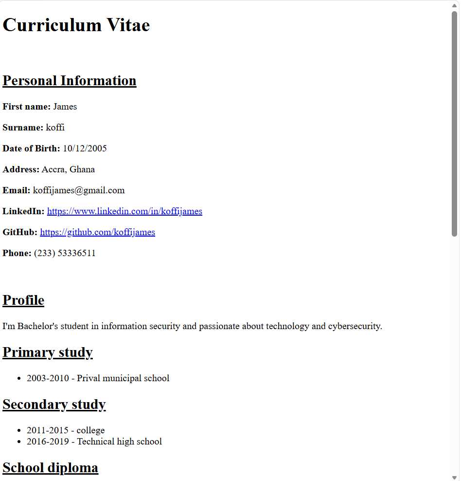
Capture à venir🔍Un CV en HTML/CSS construit à la main — un exercice de mise en page et de style de contenu personnel.
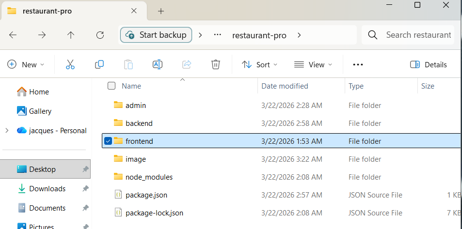
Capture à venir🔍Un projet web à thème restaurant utilisé pour pratiquer l'interactivité front-end en JavaScript.
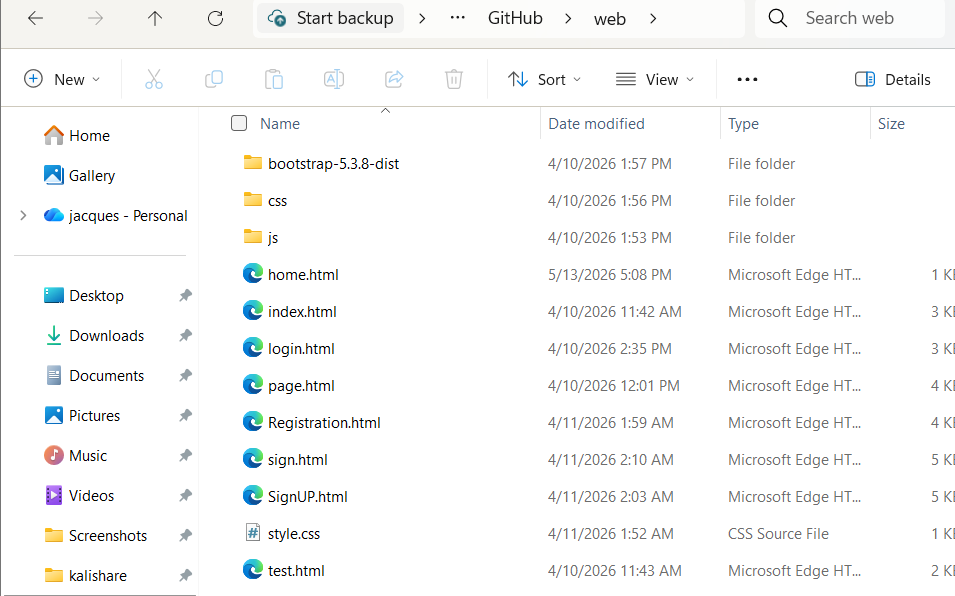
Capture à venir🔍Un projet HTML/CSS fondamental pour ancrer les bases de la mise en page et du style.
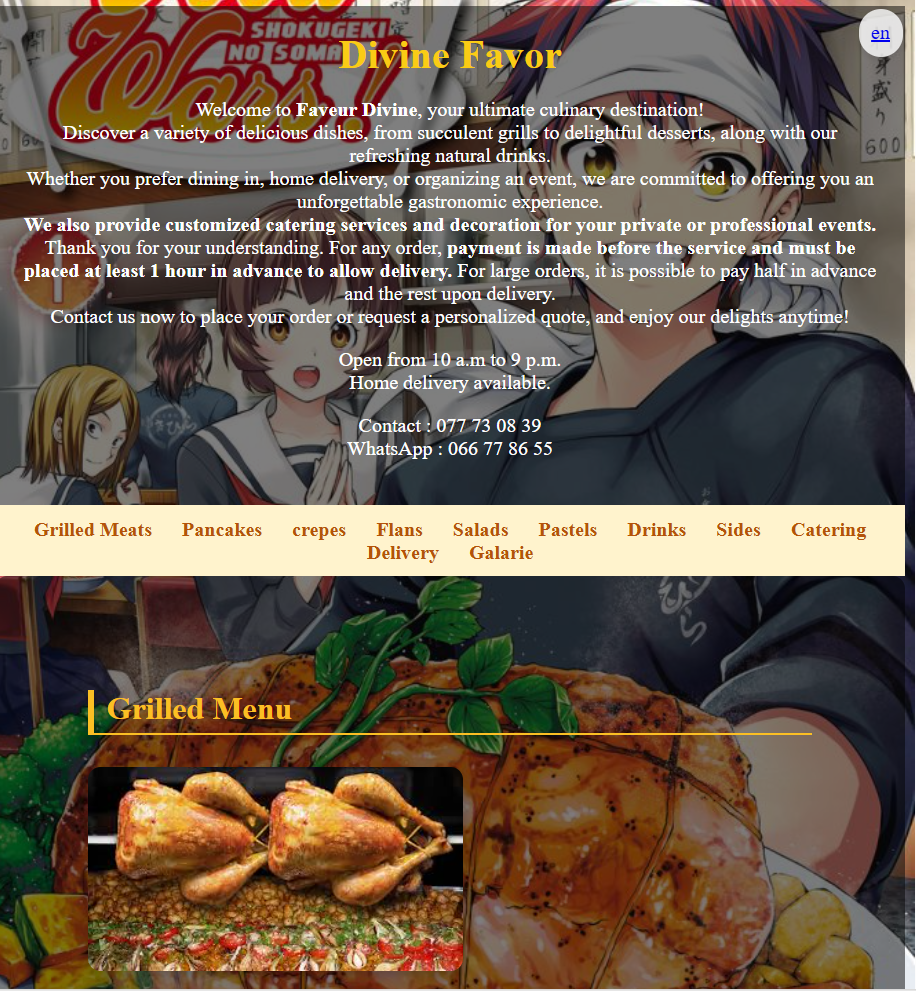
Capture à venir🔍Un projet HTML open-source (licence MIT), exploration de la structure de page et du design de contenu.
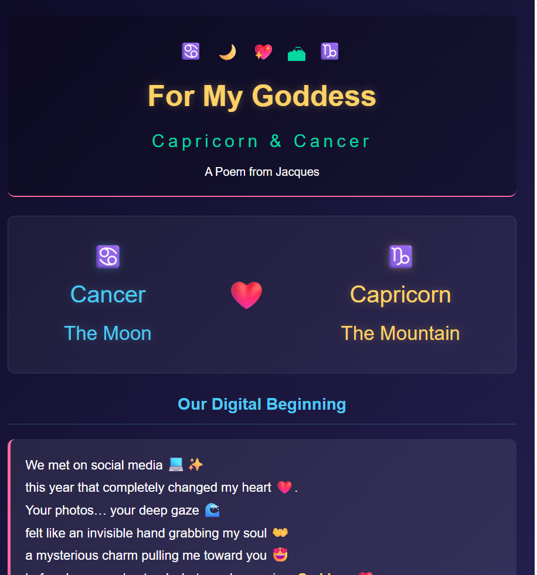
Capture à venir🔍Un projet HTML public utilisé pour explorer une nouvelle mise en page et un nouveau style visuel.
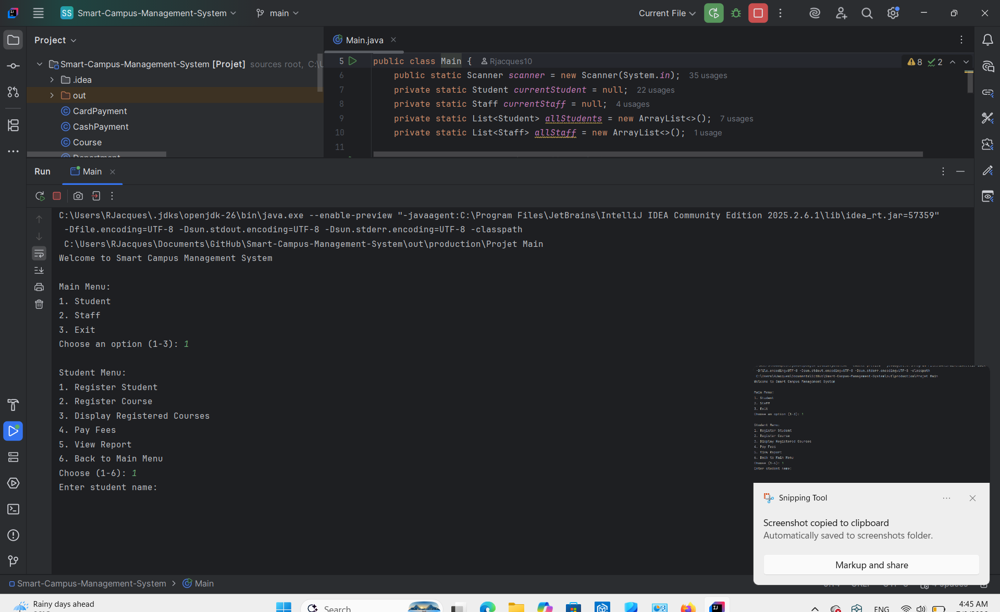
Capture à venir🔍Un système intelligent de gestion de campus explorant comment les systèmes d'information peuvent simplifier les opérations universitaires quotidiennes.
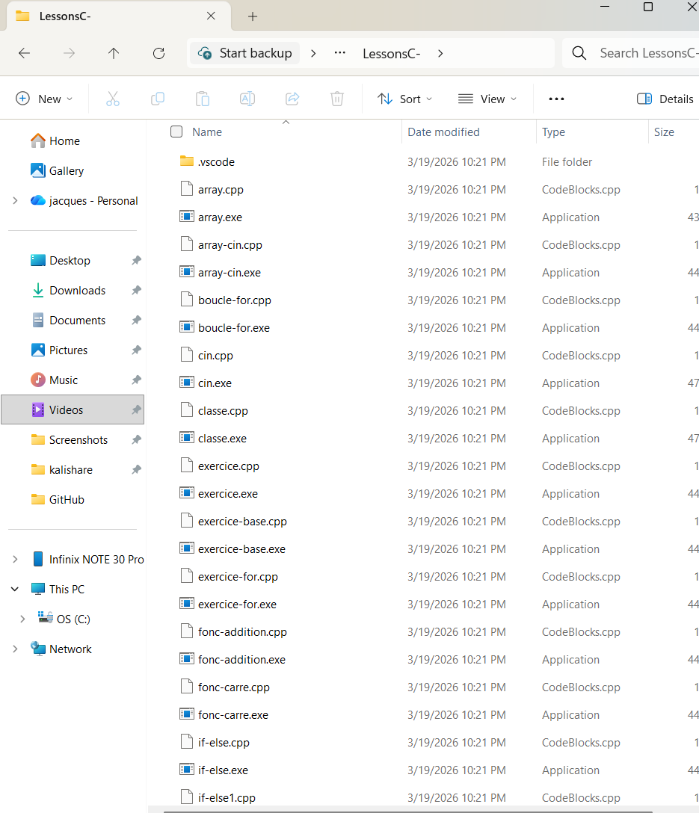
Capture à venir🔍Exercices pratiques et notes d'apprentissage du C++ — logique, mémoire et résolution de problèmes.
 Capture à venir🔍
Capture à venir🔍Un projet Python utilisé pour pratiquer le scripting et la résolution de problèmes computationnels.
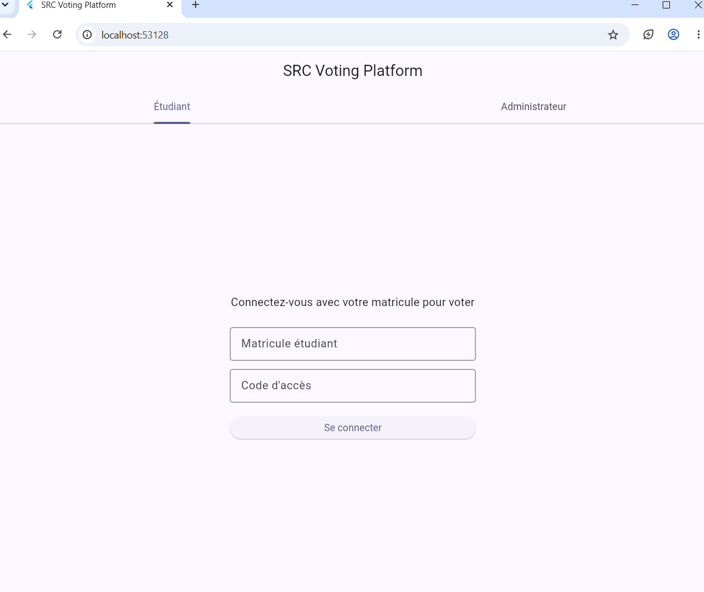
Capture à venir🔍Plateforme de vote en ligne réelle, en développement actif — Dart / Flutter. Dépôt privé le temps de finaliser la sécurité du système.
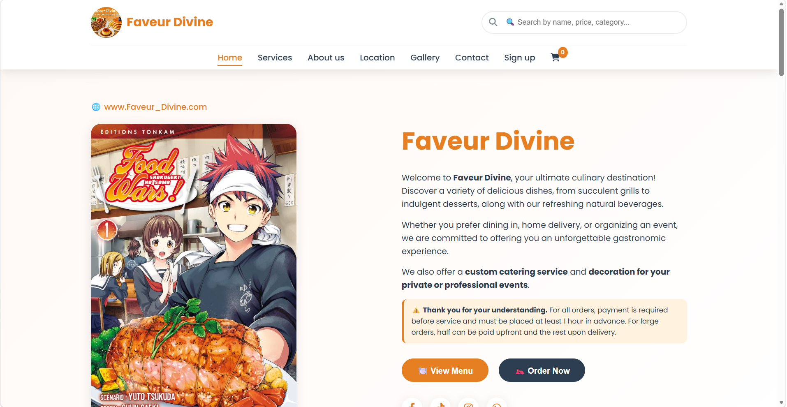
Capture à venir🔍Variante d'un site de restaurant en JavaScript, encore en cours de développement.
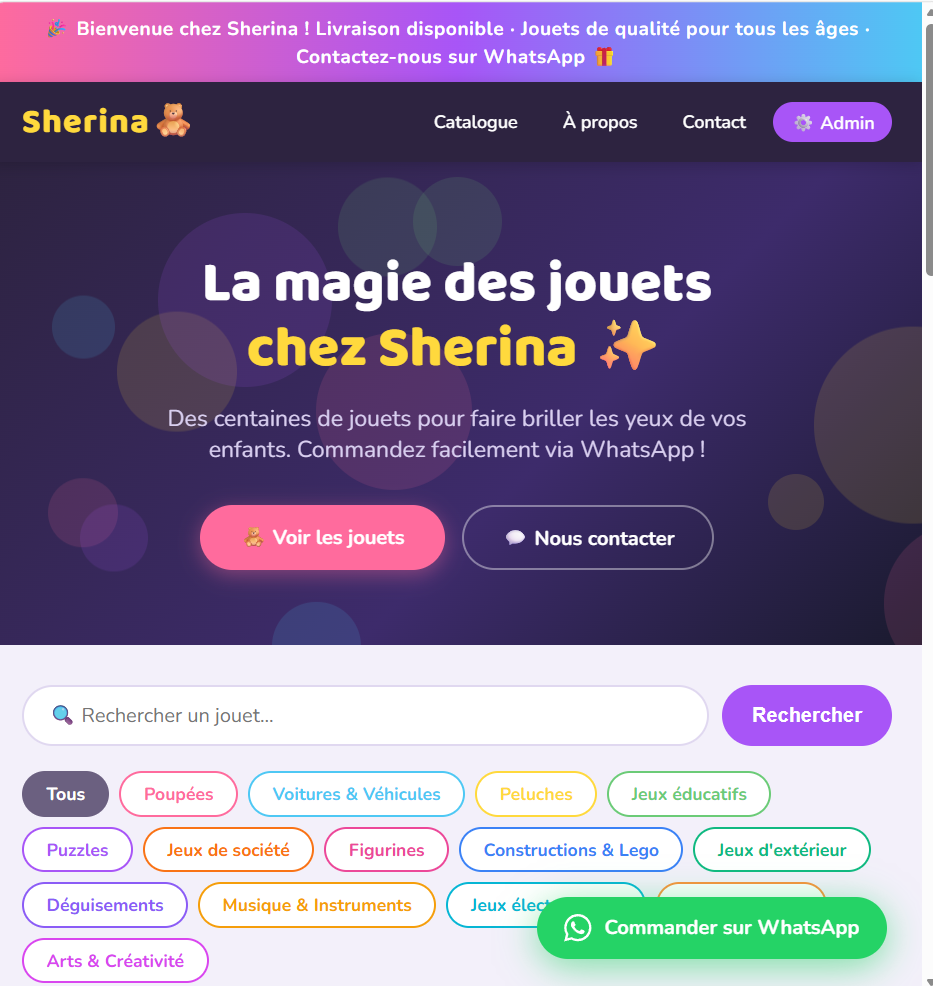
Capture à venir🔍Boutique en ligne de jouets (Sherina) — projet HTML en développement.
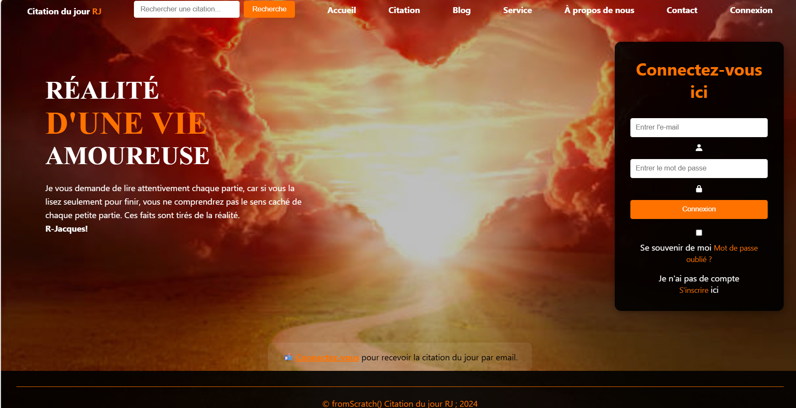
Capture à venir🔍Projet personnel en JavaScript, encore en cours de développement.
 Capture à venir🔍
Capture à venir🔍Projet personnel encore en développement, non finalisé.
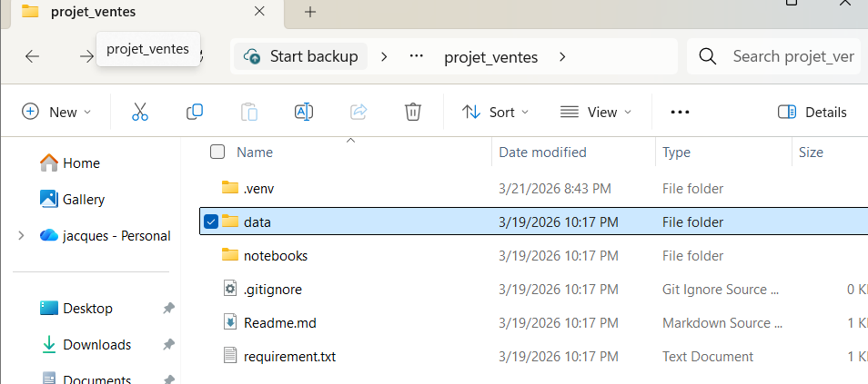
Capture à venir🔍Notebook d'analyse de données de ventes — exploration de données avec Python/Jupyter.